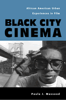

<body bgcolor="#FFFFFF" text="#000000" link="#0000FF" vlink="#CC0000" alink="#CC0000"><center><hr width="350" size="1" align="center" noshade>From Green Pastures to Hoodz<hr width="350" size="1" align="center" noshade><p><a href="https://cdcshoppingcart.uchicago.edu/Cart/ChicagoBook.aspx?ISBN=9781592130023&&PRESS=temple" target="_top">Buy this book!</a> | <a href="https://cdcshoppingcart.uchicago.edu/Cart/Cart.aspx?PRESS=temple" target="_top">View Cart</a> | <a href="https://cdcshoppingcart.uchicago.edu/Cart/Cart.aspx?PRESS=temple" target="_top">Check Out</a></p><p></p></center><!--none//--><h1>Black City Cinema</h1>
<H2>African American Urban Experiences in Film</H2>
<h3>Paula J. Massood</h3>
<P>cloth 1-59213-002-X $72.50, Jan 03, <FONT COLOR=#990033>Out of Stock Unavailable</FONT>
<br>paper 1-59213-003-8 $26.95, Jan 03, <FONT COLOR=#990033>Available</FONT>
<br>Electronic Book 1-43990-565-7 $26.95 <FONT COLOR=#990033>Out of Stock Unavailable</FONT>
<BR> 280 pp
6x9
16&nbsp;halftones
</P><BLOCKQUOTE><I>"</I>Black City Cinema<I> covers an impressive range of textual and historical ground to reveal "the city" as far more than a frequent setting or theme in Black films. Instead, Paula Massood demonstrates how the urban has functioned as a central organizing trope in the articulation of Black culture, progress, protest and subjectivity. Massood provides a much-needed innovative framework for understanding the complex development of African American film culture."</I>
<br>&#151<b>Jacqueline Stewart</b>, Assistant Professor English, Cinema & Media Studies, African & African American Studies, University of Chicago and author of the forthcoming book, <I>Migrating to the Movies: Cinema and Black Urban Modernity</I><I></I></BLOCKQUOTE>
<p>In <I>Black City Cinema</I>, Paula Massood shows how popular films reflected the massive social changes that resulted from the Great Migration of African Americans from the rural South to cities in the North, West, and Mid-West during the first three decades of the twentieth century. By the onset of the Depression, the Black population had become primarily urban, transforming individual lives as well as urban experience and culture.
<p>Massood probes into the relationship of place and time, showing how urban settings became an intrinsic element of African American film as Black people became more firmly rooted in urban spaces and more visible as historical and political subjects. Illuminating the intersections of film, history, politics, and urban discourse, she considers the chief genres of African American and Hollywood narrative film: the black cast musicals of the 1920s and the "race" films of the early sound era to blaxploitation and hood films, as well as the work of Spike Lee toward the end of the century. As it examines such a wide range of films over much of the twentieth century, this book offers a unique map of Black representations in film.
<BR>&nbsp;<h2>Excerpt</h2><P>Excerpt available at <a href="http://www.temple.edu/tempress">www.temple.edu/tempress</a></p>
<BR>&nbsp;<h2>Reviews</h2>
<p><I>"Massood's interpretive discussions of the films are clearly written and convincing; she makes an important original point about the ending of </I>Do the Right Thing<I>, probably the most discussed African American film&#151and ending&#151of all time. She illuminates many other films, about which she writes with easy familiarity and complete authority."</I>
<br>&#151<b>J. Ronald Green</b>, Professor, History of Art/Film Studies, Ohio State University and author of <I>Straight Lick: The Cinema of Oscar Micheaux</I>
<p><i>"[Massood] supplies a new and very rich way of looking at and analyzing the films that she discusses. Highly recommended for academic libraries and large public libraries with a strong film or African American collection."</i>
<br>&#151<b><i>Library Journal</i></b>
<p><i>"Thanks to Massood's lively writing style, </i>Black City Cinema<i> is a good read. It is also an important contribution to the field of film studies."</i>
<br>&#151<b><i>Film Quarterly</i></b>
<p><i>"...emerges as an important resource... [it] is an engaging read, pulling together its various strands of analysis in incisive prose."</i>
<br>&#151<b><i>Cineaste</i></b>
<p><i>"</i>Black City Cinema<i> stands as an original, important contribution to black cinema's building theoretical and critical discourse."</i>
<br>&#151<b><i>Ethnic and Racial Studies</i></b>
<p><i>"Examines how African Americans and the urban environment have been portrayed in films since the 1920s."</i>
<br>&#151<b><i>Black Issues Book Review</i></b>
<BR>&nbsp;<h2>Contents</h2><P>
<p>Acknowledgments
<br>Introduction: Migrations, Movies, and African American Cities on the Screen
<p>1. The Antebellum Idyll and Hollywood's Black-Cast Musicals
<br>(<I>Hallelujah, The Green Pastures, Cabin in the Sky, Stormy Weather</I>)
<p>2. Harlem is Heaven: City Motifs in Race Films from the Early Sound Era
<br>(<I>Scar of Shame, Within Our Gates, Two Gun Man From Harlem, Dark Manhattan</I>)
<p>3. Cotton in the City: The Black Ghetto, Blaxploitation, and Beyond
<br>(<I>Cotton Comes to Harlem, Sweet Sweetback's Baadasssss Song, Superfly, Bush Mama</I>)
<p>4. Welcome to Crooklyn: Spike Lee and the Rearticulation of the Black Urbanscape
<br>(<I>She's Gotta Have It, Do the Right Thing</I>)
<p>5. Out of the Ghetto, into the Hood: Changes in the Construction of Black City Cinema
<br>(<I>Boyz N the Hood, <br>Menace II Society</I>)
<p>6. Taking the A-Train: the City, the Train, and Migration in Spike Lee's <i>Clockers</i>
<br>(<I>Posse, Clockers</I>)
<p>Epilogue: New Millennium Minstrel Shows? African American Cinema in the Late 1990s
<br>(<I>Down in the Delta, Shaft (2000)</I>)
<p>Notes
<br>Index
</P><BR>&nbsp;<H2>About the Author(s)</H2>
<table><tr><td valign="top"><img src="/tempress/authors/1521_au.gif" height="90" width="75"></td><td width="100%" valign="middle"><p><b>Paula J. Massood</b> is Assistant Professor of Film Studies at Brooklyn College, City University of New York and editor of <i><a href="1844_reg.html" target="_top">The Spike Lee Reader </a></i>(Temple).</P></td></tr></table>
<BR><H2>Subject Categories</H2>
<p><A HREF="/tempress/cinema.html" TARGET="_top">Cinema Studies</a>
<BR><A HREF="/tempress/african.html" TARGET="_top">African American Studies</a>
<BR><A HREF="/tempress/american.html" TARGET="_top">American Studies</a>
</p>
<BR><h2 class="inpageheading">In the series</H2>
<P><I><a href="http://www.temple.edu/tempress/culture.html" onMouseOver="window.status='Click for other books in this series!'; return true;" onMouseOut="window.status=''; return true;" target="_top">Culture and the Moving Image</a></i>, edited by Robert Sklar.
</p><p>The <I>Culture and the Moving Image</I> series, edited by Robert Sklar, seeks to publish innovative scholarship and criticism on cinema, television, and the culture of the moving image. The series will emphasize works that view these media in their broad cultural and social frameworks. Its themes will include a global perspective on the world-wide production of images; the links between film, television, and video art; a concern with issues of race, class, and gender; and an engagement with the growing convergence of history and theory in moving image studies.</p>
<p align="center"><a href="https://cdcshoppingcart.uchicago.edu/Cart/ChicagoBook.aspx?ISBN=9781592130023&&PRESS=temple" target="_top">Buy this book!</a> | <a href="https://cdcshoppingcart.uchicago.edu/Cart/Cart.aspx?PRESS=temple" target="_top">View Cart</a> | <a href="https://cdcshoppingcart.uchicago.edu/Cart/Cart.aspx?PRESS=temple" target="_top">Check Out</a></p><p><font face="Arial" size="1"><a href="copyright.html" onMouseOver="window.status='Web Copyright Policy';return true;" onMouseOut="window.status=''" title="Web Copyright Policy">&copy;</a> 2015 <a href="http://www.temple.edu" target="new" onMouseOver="window.status='Link to Temple University home page';return true;" onMouseOut="window.status=''" title="Link to Temple University home page">Temple University</a>. All Rights Reserved. http://www.temple.edu/tempress/titles/1521_reg.html</font></p>